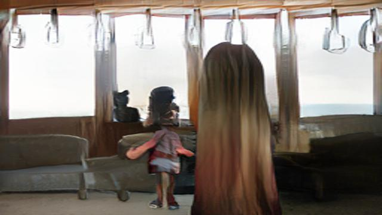
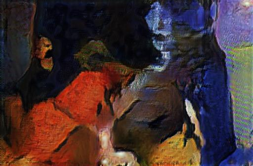
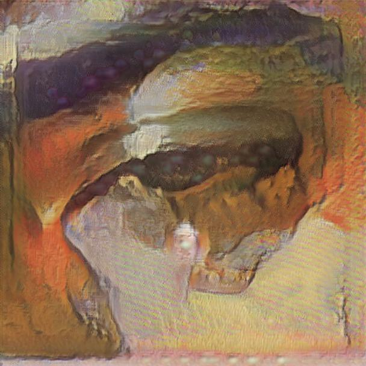
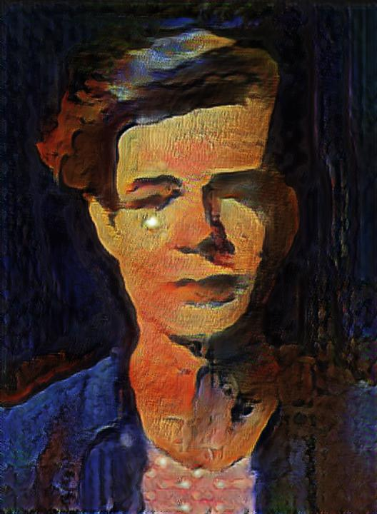

With Runway, I used AI to create works of art! I first experimented with SPADECOCO to create a replica of a movie still from the Studio Ghibli film, Spirited Away. The three images following are a series of works done with AdaIn titled "Boys Do Cry" that highlights a man's emotional reactions in the face of toxic masculinity.
[initial drawing of movie still]
[final result from SPADECOCO]
[Boys Do Cry]
[slouched]
[teared down]
[world's strongest man]